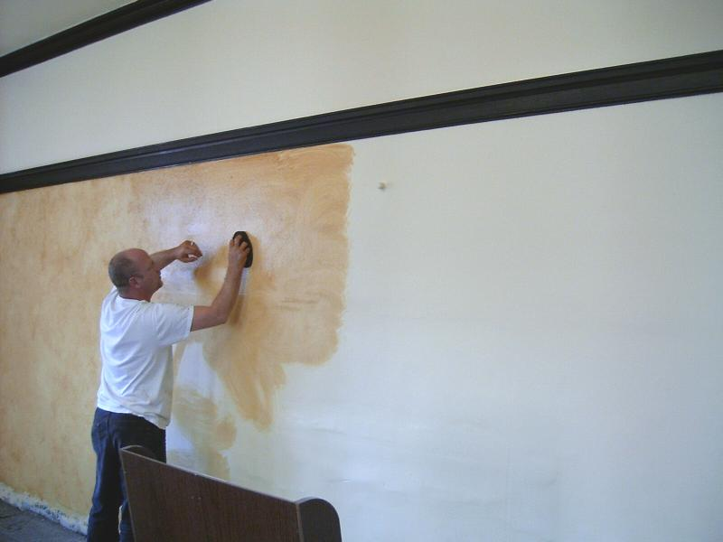

Sara Drake
Office Manager
Office manager in the pharmaceutical industry for over three years.
Featured Projects
View selected projects below.
Office Devising Wall
Construction of a devising wall to create two separate office spaces.
View project / case studyWork Experience
Sara has worked in the professional environment for almost ten years.
Account Coordinator
CEVA Logistics
January 2012 - March 2016
Responsible for coordinating and managing the freight shipments for high-profile pharmaceutical clients.
Responsibilities:
- Account management
- Rate calculations
- General administrative function
- Client communications
Real Estate Loan Servicer
Eglin Federal Credit Union
January 2006 - December 2009
Held various roles with the company, including Records Vault Associate, Real Estate Receptionist, and Real Estate Loan Serving Reprentative.
Responsibilities:
- Record management
- Appointment coordination
- Mortgage calculations
- Loan servicing
Education
University of Central Florida - Orlando, FL
Bachelor's of Political Science, May 2011
Northwest Florida State College, Ft. Walton Beach, FL
Associates Degree, December 2009